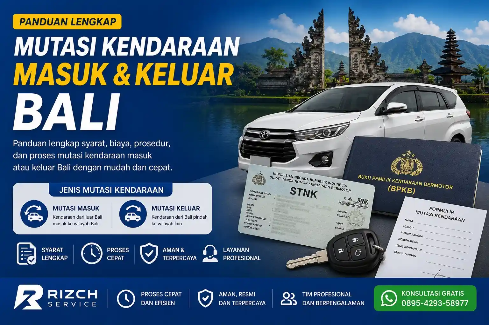

Rizch Service membantu pengurusan balik nama kendaraan, STNK hilang, dan berbagai administrasi kendaraan lainnya di Bali.
Banyak masyarakat masih bingung mengenai cara mutasi kendaraan di Bali, mulai dari syarat dokumen, prosedur di Samsat, hingga estimasi biaya mutasi kendaraan masuk dan keluar. Padahal jika tidak segera diurus, kendaraan dapat mengalami kendala administrasi, pembayaran pajak, maupun proses balik nama kendaraan di kemudian hari.
Melalui artikel ini, Rizch Bali akan membahas secara lengkap prosedur mutasi kendaraan di Bali terbaru, termasuk informasi perpanjang STNK Bali, balik nama kendaraan, dan layanan administrasi kendaraan lainnya di Bali. mulai dari persyaratan, tahapan proses, biaya, hingga tips agar pengurusan lebih cepat dan aman.
Apa itu Mutasi Kendaraan?
Mutasi kendaraan adalah proses perpindahan kepemilikan kendaraan bermotor dari satu wilayah ke wilayah lain, atau dari satu pemilik ke pemilik baru. Di Bali, mutasi kendaraan dibagi menjadi dua jenis utama: mutasi masuk (kendaraan dari luar Bali masuk ke Bali) dan mutasi keluar (kendaraan dari Bali pindah ke wilayah lain).
Kapan Perlu Mutasi Kendaraan?
Anda perlu mengurus mutasi kendaraan dalam situasi berikut:
1. Mutasi Masuk ke Bali
- Pindah domisili ke Bali dari provinsi lain
- Membeli kendaraan bekas dari luar Bali
- Kendaraan perusahaan pindah cabang ke Bali
2. Mutasi Keluar dari Bali
- Pindah domisili keluar dari Bali
- Menjual kendaraan ke pemilik di provinsi lain
- Kendaraan perusahaan pindah cabang keluar Bali
Syarat Mutasi Kendaraan di Bali
Syarat Mutasi Masuk (Dari Luar Bali)
Berikut beberapa dokumen yang biasanya diperlukan untuk proses mutasi kendaraan masuk ke Bali.
- BPKB asli dan fotokopi
- STNK asli dan fotokopi
- KTP pemilik baru (Bali) dan fotokopi
- Surat keterangan pindah domisili (jika ada)
- Formulir permohonan mutasi dari Samsat asal
- Surat keterangan fiskal (untuk kendaraan di atas 150cc atau niaga)
- Kendaraan harus diperiksa fisik di Samsat Bali
Syarat Mutasi Keluar (Dari Bali ke Luar)
- BPKB asli dan fotokopi
- STNK asli dan fotokopi
- KTP pemilik dan fotokopi
- Formulir permohonan mutasi keluar dari Samsat Bali
- Surat keterangan pindah domisili (jika pindah)
- Kendaraan diperiksa fisik di Samsat Bali
Biaya Mutasi Kendaraan
Biaya mutasi kendaraan terdiri dari beberapa komponen:
- Biaya administrasi Samsat — sesuai ketentuan pemerintah
- Biaya penerbitan STNK baru — plat nomor baru sesuai wilayah tujuan
- Biaya BPKB baru — jika ada perubahan kepemilikan
- Biaya cek fisik kendaraan — pemeriksaan di Samsat
- Biaya pengesahan fiskal — untuk kendaraan tertentu
*Total biaya bervariasi tergantung jenis kendaraan, wilayah tujuan, dan kondisi dokumen. Hubungi kami untuk estimasi biaya transparan tanpa biaya tersembunyi.
Lama Proses Mutasi Kendaraan
Proses mutasi kendaraan umumnya membutuhkan waktu:
- Mutasi masuk: 3-7 hari kerja (tergantung kelengkapan dokumen dari Samsat asal)
- Mutasi keluar: 3-5 hari kerja untuk proses di Samsat Bali, ditambah waktu proses di Samsat tujuan
Dengan layanan biro jasa Rizch Service, proses bisa lebih cepat karena dokumen diurus oleh tim berpengalaman yang sudah familiar dengan prosedur Samsat Bali.
Cara Mutasi Kendaraan Tanpa Ribet
Rizch Service menyediakan layanan antar jemput dokumen mutasi kendaraan untuk seluruh wilayah Bali. Anda tidak perlu bolak-balik ke Samsat atau mengantre panjang.
Layanan Antar Jemput Dokumen
- Konsultasi gratis via WhatsApp mengenai kelengkapan dokumen
- Tim kami jemput dokumen di lokasi Anda (rumah, kantor, atau villa)
- Proses pengurusan di Samsat Bali oleh tim profesional
- Update status berkala via WhatsApp
- Dokumen dan STNK/BPKB baru diantar ke tangan Anda
FAQ Mutasi Kendaraan di Bali
Mutasi kendaraan adalah proses perpindahan administrasi kendaraan dari satu wilayah Samsat ke wilayah lain atau perubahan data kepemilikan kendaraan.
Mutasi kendaraan biasanya dilakukan saat pindah domisili ke provinsi lain, membeli kendaraan dari luar daerah, atau memindahkan kendaraan perusahaan ke wilayah baru.
Ya, kendaraan umumnya perlu dilakukan cek fisik di Samsat sebagai bagian dari proses mutasi kendaraan.
Estimasi proses mutasi kendaraan biasanya sekitar 3–7 hari kerja tergantung kelengkapan dokumen dan proses administrasi Samsat.
Dokumen yang biasanya diperlukan antara lain BPKB asli, STNK asli, KTP pemilik, hasil cek fisik kendaraan, dan dokumen pendukung lainnya sesuai kebutuhan.
Butuh Bantuan Mutasi Kendaraan di Bali?
Hubungi Rizch Service sekarang untuk konsultasi dan pengurusan mutasi kendaraan masuk maupun keluar Bali dengan proses cepat, aman, dan terpercaya.
Konsultasi Gratis